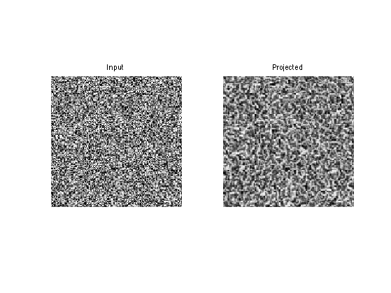
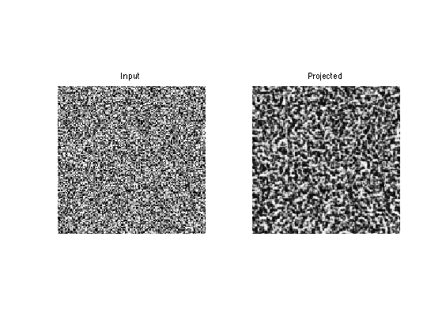
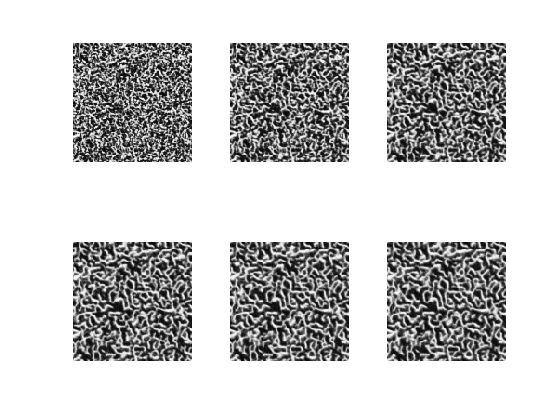
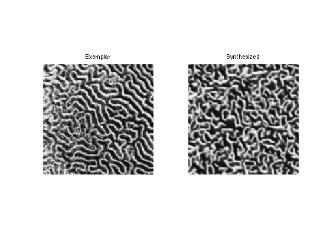
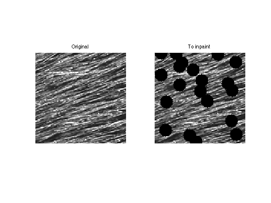
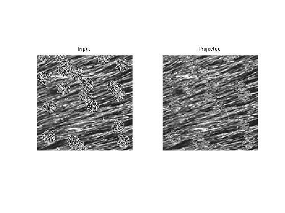
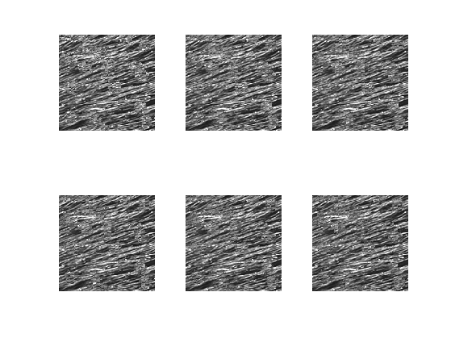
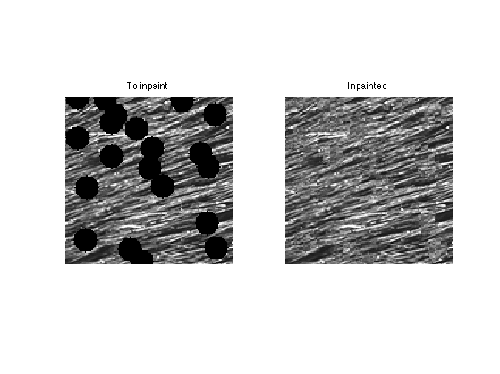

Texture Synthesis and Inpainting using Patch Projections
This numerical tour explores texture synthesis and inpainting using patch averaging.
Contents
Installing toolboxes and setting up the path.
You need to download the following files: signal toolbox and general toolbox.
You need to unzip these toolboxes in your working directory, so that you have toolbox_signal and toolbox_general in your directory.
For Scilab user: you must replace the Matlab comment '%' by its Scilab counterpart '//'.
Recommandation: You should create a text file named for instance numericaltour.sce (in Scilab) or numericaltour.m (in Matlab) to write all the Scilab/Matlab command you want to execute. Then, simply run exec('numericaltour.sce'); (in Scilab) or numericaltour; (in Matlab) to run the commands.
Execute this line only if you are using Matlab.
getd = @(p)path(p,path); % scilab users must *not* execute this
Then you can add the toolboxes to the path.
getd('toolbox_signal/'); getd('toolbox_general/');
Creating a Dictionary of Patches
Given an exemplar image, we extract many patch that are our library. We even perform PCA dimensionality reduction to speed up nearest neighbors search.
The main parameter is the width of the patches.
w = 5;
The other parameter is the number of patch in the exemplar dictionary.
q = 1000;
We load an exemplar image.
name = 'corral';
n = 128;
M0 = load_image(name,n);
M0 = rescale( crop(M0,n) );
We set up larges (w,w,n-w+1,n-w+1) matrices representing the X and Y position of the pixel to extract.
p = n-w+1; % location of pixels [Y,X] = meshgrid(1:p,1:p); % offsets [dY,dX] = meshgrid(0:w-1,0:w-1); % location of pixels to extract X = reshape(X, [1 1 p p]); Y = reshape(Y, [1 1 p p]); X = repmat(X, [w w 1 1]) + repmat(dX, [1 1 p p]); Y = repmat(Y, [w w 1 1]) + repmat(dY, [1 1 p p]);
We extract all the patches and reshape the matrix of patch so that P(:,:,i) is a patch
P0 = M0(X + (Y-1)*n); P0 = reshape(P0,w,w,p*p);
Sub-sample the patches
sel = randperm(size(P0,3)); sel = sel(1:q); P0 = P0(:,:,sel);
Image Patch-wise Projection
The basic step for synthesis or inpainting is to project each patch of an image to its nearest neighbor in the dictionary.
The initial image is just noise for instance.
n = 128; M = rand(n);
We define an offset vector to shift the projected patch. This needs to be changed during the iteration of the algorithm (either synthesis or inpainting).
ofx = 2; ofy = 1;
Patch locations.
[Y,X] = meshgrid(1:w:n, 1:w:n); p = size(X,1); [dY,dX] = meshgrid(0:w-1,0:w-1); X = reshape(X, [1 1 p p]); Y = reshape(Y, [1 1 p p]); X = repmat(X, [w w 1 1]) + repmat(dX, [1 1 p p]); Y = repmat(Y, [w w 1 1]) + repmat(dY, [1 1 p p]);
Shift location, with proper boundary condition (cyclic).
Xs = mod(X+ofx-1, n)+1; Ys = mod(Y+ofy-1, n)+1;
Extract the patches.
P = M(Xs + (Ys-1)*n);
Replace each patch by its closest match.
for i=1:p*p % distance to current patch d = sum(sum( (P0 - repmat(P(:,:,i), [1 1 q])).^2 ) ); % best match [tmp,s] = min(d); % replace the patch P(:,:,i) = P0(:,:,s); end
Reconstruct the image.
Mp = M; Mp(Xs + (Ys-1)*n) = P;
Display.
clf; imageplot(M,'Input', 1,2,1); imageplot(Mp,'Projected', 1,2,2);
Texture Synthesis
Texture synthesis is obtained by performing the projection for several offset and averaging the results.
To speed up performance, we consider only a subset of all possible w*w offsets.
noffs = 10;
Compute a randomized list of offsets
sel = randperm(w*w); sel = sel(1:noffs); OffX = dX(sel); OffY = dY(sel);
We perform one step of synthesis by cycling through the offset.
M1 = zeros(n); for j=1:noffs ofx = OffX(j); ofy = OffY(j); % shift locations Xs = mod(X+ofx-1, n)+1; Ys = mod(Y+ofy-1, n)+1; % extract patch P = M(Xs + (Ys-1)*n); % replace by closest patch for i=1:p*p d = sum(sum( (P0 - repmat(P(:,:,i), [1 1 q])).^2 ) ); [tmp,s] = min(d); P(:,:,i) = P0(:,:,s); end % reconstruct the image. M1(Xs + (Ys-1)*n) = M1(Xs + (Ys-1)*n) + P; end M1 = M1 / noffs;
To enhance the synthesis result, we perform histogram equalization.
M1 = perform_hist_eq(M1,M0);
Display the result.
clf; imageplot(M,'Input', 1,2,1); imageplot(M1,'Projected', 1,2,2);
Exercice 1: (check the solution) Perform several step of synthesis.
exo1;
Display the results.
clf; imageplot(M0,'Exemplar', 1,2,1); imageplot(M,'Synthesized', 1,2,2);
Exercice 2: (check the solution) Perform more iteration, and increase the value of q and noffs.
exo2;
Exercice 3: (check the solution) Explore the influence of the parameters w and q on the quality of the synthesis.
exo3;
Exercice 4: (check the solution) Perform the synthesis using different textures.
exo4;
Exercice 5: (check the solution) Extend the algorithm to handle color textures.
exo5;
Texture Inpainting
Texture inpainting corresponds to filling in large hole in an image. It It corresponds to a constraints synthesis inside the area of the hole.
Load a texture.
name = 'hair';
n = 128;
Ma = load_image(name);
Ma = rescale( crop(Ma,n) );
Compute a binary mask representing holes in the textures.
% size of the holes h = 9; % number of holes nh = 20; mask = zeros(n); [V,U] = meshgrid(1:n,1:n); for i=1:nh % location of the hole x = floor(rand(2,1)*(n-1))+1; d = (U-x(1)).^2 + (V-x(2)).^2; mask( d<=h^2 ) = 1; end
Create holes.
M0 = Ma; M0(mask==1) = 0;
Display with / without holes.
clf; imageplot(Ma, 'Original', 1,2,1); imageplot(M0, 'To inpaint', 1,2,2);
Collect all the patches from the image.
p = n-w+1; [Y,X] = meshgrid(1:p,1:p); [dY,dX] = meshgrid(0:w-1,0:w-1); X = reshape(X, [1 1 p p]); Y = reshape(Y, [1 1 p p]); X = repmat(X, [w w 1 1]) + repmat(dX, [1 1 p p]); Y = repmat(Y, [w w 1 1]) + repmat(dY, [1 1 p p]); P0 = M0(X + (Y-1)*n); P0 = reshape(P0,w,w,p*p);
Remove those that cross the holes.
I = find( min(min(P0,[],1),[],2)~=0 ); P0 = P0(:,:,I);
Number of patches.
q = 1000;
Sub-sample the patches
sel = randperm(size(P0,3)); sel = sel(1:q); P0 = P0(:,:,sel);
Initialize the inpainting with random values inside the hole.
M = M0; I = find(mask==1); M(I) = rand(length(I),1);
Extract non-overlapping patches in the image, with a given offset.
ofx = 2; ofy = 1; [Y,X] = meshgrid(1:w:n, 1:w:n); p = size(X,1); [dY,dX] = meshgrid(0:w-1,0:w-1); X = reshape(X, [1 1 p p]); Y = reshape(Y, [1 1 p p]); X = repmat(X, [w w 1 1]) + repmat(dX, [1 1 p p]); Y = repmat(Y, [w w 1 1]) + repmat(dY, [1 1 p p]); Xs = mod(X+ofx-1, n)+1; Ys = mod(Y+ofy-1, n)+1; P = M(Xs + (Ys-1)*n); Pmask = M(Xs + (Ys-1)*n);
Replace each patch by its closest match.
for i=1:p*p if sum(sum(Pmask(:,:,i)))>0 % project only a patch crossing the hole. % distance to current patch d = sum(sum( (P0 - repmat(P(:,:,i), [1 1 q])).^2 ) ); % best match [tmp,s] = min(d); % replace the patch P(:,:,i) = P0(:,:,s); end end
Reconstruct the image.
Mp = M; Mp(Xs + (Ys-1)*n) = P;
Impose the values of the known pixels.
Mp(mask==0) = M0(mask==0);
Display.
clf; imageplot(M,'Input', 1,2,1); imageplot(Mp,'Projected', 1,2,2);
Exercice 6: (check the solution) Perform the inpainting by repeating several time the projection with different offsets. You do not needs to average the offset for inpainting.
exo6;
Display.
clf; imageplot(M0, 'To inpaint', 1,2,1); imageplot(M, 'Inpainted', 1,2,2);
Exercice 7: (check the solution) Test the inpainting with larger holes and with various B&W and color images.
exo7;